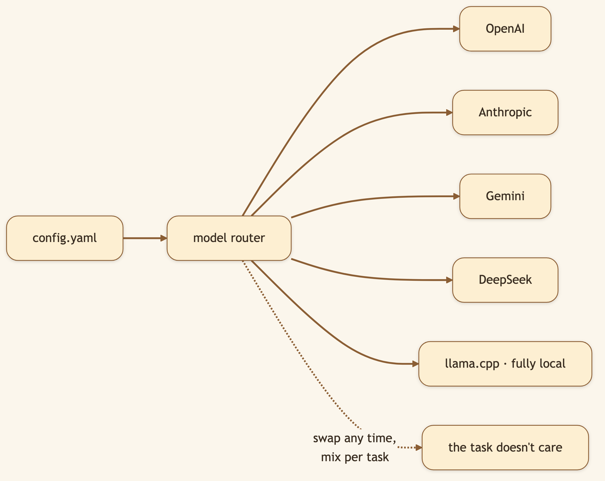
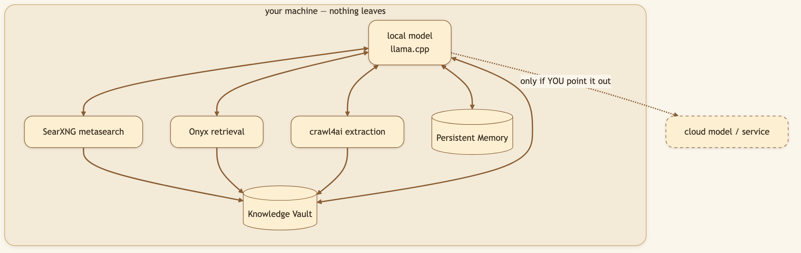
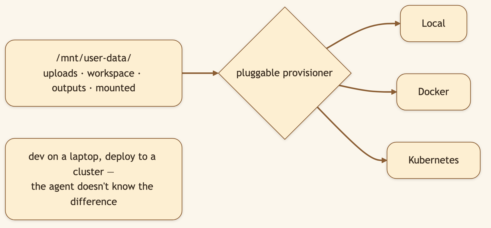

LinkedIn hook (use as the post's first line): "Two questions decide whether you can trust an AI with real work: whose model is this, and where does my data go? Our answer to both is the same — yours, and nowhere you don't choose." Audience: LinkedIn → Medium. Privacy-conscious engineers, regulated industries, self-hosters, anyone who can't paste client data into a SaaS box.
The most valuable work — proprietary code, client documents, financial models, legal research — is exactly the work you can't paste into someone else's cloud. That's the ceiling most AI tools hit. CapyHome doesn't have that ceiling.
🖼️ [User add: image containing — a "data never leaves the machine" diagram: a laptop outline containing the model + research stack + vault, with a struck-through cloud outside it. Strong LinkedIn hero image.]
CapyHome isn't married to any provider. Define models in config.yaml and mix them freely:
models:
- name: gpt-4
display_name: GPT-4
use: langchain_openai:ChatOpenAI
model: gpt-4
api_key: $OPENAI_API_KEY

"Local-first" means the default is that nothing leaves — but you're never trapped offline. The full research stack runs locally:
make local-stack-start # SearXNG + Onyx + crawl4ai, all on your box

Pair a local model with the local stack and you have a complete, capable agent that never phones home — queries, documents, mounted folders, vault, all on hardware you control.

🖼️ [User add: image containing — a real screenshot of config.yaml with multiple models defined (one cloud, one local llama.cpp). A clean editor screenshot.]
CapyHome is open source under the MIT license — read every line, run it on your own infra, fork it, build on it. No hidden telemetry, no mandatory account, no server you're forced to trust. The privacy guarantee isn't a policy promise; it's a property of where the code runs.
use: class (e.g. langchain_openai:ChatOpenAI) and its params, so adding a provider is config, not code.make local-stack-start / -status./mnt/user-data/ (uploads / workspace / outputs / mounted) and is provisioned Local, Docker, or Kubernetes through one pluggable provisioner.Title card: "An AI that never leaves your machine."
[0:00–0:12] Hook: "My most valuable work — client docs, proprietary code — can't go into someone else's cloud. That's where most AI tools become useless to me. So I ran one entirely on my own machine."
[0:12–0:30] Screen — config.yaml with a local model: "Here's the config. I point it at a local llama.cpp model. No cloud brain. Then I start the local research stack — search and crawling, all on my box."
[0:30–0:50] Screen — unplug network, run a research task: "Watch this — I'll disconnect from the internet entirely… and it still researches, reasons, and files everything into the vault. Nothing left the room."
[0:50–1:05] Screen — show MIT license / repo: "And it's MIT-licensed and self-hosted, so the privacy isn't a promise in a policy — it's a property of where the code runs. I can read every line."
[1:05–1:15] Close: "Calm, capable, and entirely yours. Link below."
make local-stack-start, pointconfig.yamlat a local llama.cpp model, then do a full research task with your network unplugged. It works — and nothing left the room.
git clone https://github.com/CapyHome/CapyHome.git && cd CapyHome && make config && make docker-start
Next: The Browser Clipper →.